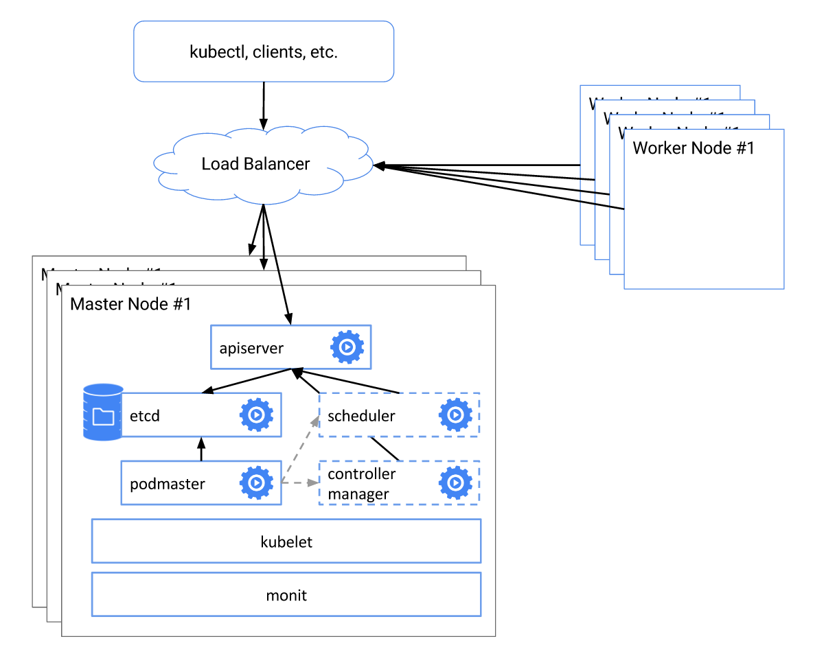

Kubernetes从1.5开始，通过kops或者kube-up.sh部署的集群会自动部署一个高可用的系统，包括
- etcd集群模式
- apiserver负载均衡
- controller manager、scheduler和cluster autoscaler自动选主（有且仅有一个运行实例）
如下图所示

etcd集群
从https://discovery.etcd.io/new?size=3获取token后，把https://kubernetes.io/docs/admin/high-availability/etcd.yaml放到每台机器的/etc/kubernetes/manifests/etcd.yaml，并替换掉${DISCOVERY_TOKEN}, ${NODE_NAME}和${NODE_IP}，既可以由kubelet来启动一个etcd集群。
对于运行在kubelet外部的etcd，可以参考etcd clustering guide来手动配置集群模式。
apiserver
把https://kubernetes.io/docs/admin/high-availability/kube-apiserver.yaml放到每台Master节点的/etc/kubernetes/manifests/，并把相关的配置放到/srv/kubernetes/，即可由kubelet自动创建并启动apiserver:
- basic_auth.csv - basic auth user and password
- ca.crt - Certificate Authority cert
- known_tokens.csv - tokens that entities (e.g. the kubelet) can use to talk to the apiserver
- kubecfg.crt - Client certificate, public key
- kubecfg.key - Client certificate, private key
- server.cert - Server certificate, public key
- server.key - Server certificate, private key
apiserver启动后，还需要为它们做负载均衡，可以使用云平台的弹性负载均衡服务或者使用haproxy/lvs等为master节点配置负载均衡。
controller manager和scheduler
controller manager和scheduler需要保证任何时刻都只有一个实例运行，需要一个选主的过程，所以在启动时要设置--leader-elect=true，比如
|
把kube-scheduler.yaml和kube-controller-manager.yaml(非GCE平台需要适当修改) 放到每台master节点的/etc/kubernetes/manifests/即可。
kube-dns
kube-dns可以通过Deployment的方式来部署，默认kubeadm会自动创建。但在大规模集群的时候，需要放宽资源限制，比如
|
另外，也需要给dnsmasq增加资源，比如增加缓存大小到10000，增加并发处理数量--dns-forward-max=1000等。
kube-proxy
默认kube-proxy使用iptables来为Service作负载均衡，这在大规模时会产生很大的Latency，可以考虑使用IPVS的替代方式（注意Kubernetes v1.6还不支持IPVS模式）。
数据持久化
除了上面提到的这些配置，持久化存储也是高可用Kubernetes集群所必须的。
- 对于公有云上部署的集群，可以考虑使用云平台提供的持久化存储，比如aws ebs或者gce persistent disk
- 对于物理机部署的集群，可以考虑使用iSCSI、NFS、Gluster或者Ceph等网络存储，也可以使用RAID